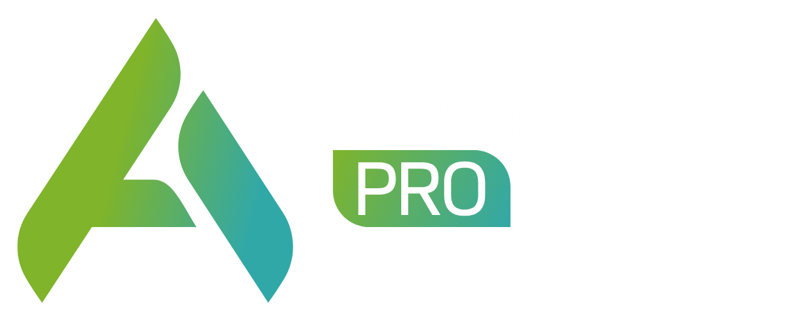

AULA NO GOOGLE MEETVagas limitadas para interação ao vivo
O passo a passo definitivo para você transformar camadas do QGIS em um Geoportal funcional e interativo.
Aprenda a estruturar seus dados, configurar servidores de mapas e publicar sua primeira plataforma WebGIS do zero, de forma prática e profissional.
Que querem entrar no mercado de trabalho com uma habilidade prática e diferenciada.
Engenheiros, biólogos e geógrafos que buscam automatizar processos e valorizar seu trabalho.
Pessoas que já usam o QGIS e querem dar o próximo passo rumo ao WebGIS.
Durante a aula, você verá a construção de um projeto real, focado nas demandas atuais do mercado de geotecnologias.
Henrique percebeu que o mercado está cheio de profissionais que passam anos na faculdade, mas congelam diante de um projeto real. Viu de perto a frustração de quem tenta decorar manuais, mas continua com salários estagnados por não saber resolver os problemas práticos que as empresas e municípios realmente enfrentam.
Com base em sua vivência na Universidade de Tecnologia de Sydney (Austrália), adaptou para o Brasil um método focado 100% na resolução de problemas reais. Nada de decoreba acadêmica inútil: o foco é pegar o dado bruto, aplicar a geotecnologia correta e entregar um resultado que vale dinheiro no mercado.
As vagas para a aula no Google Meet são limitadas para garantir a qualidade da interação. Não perca essa chance.
GARANTIR MINHA VAGA AGORA